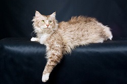
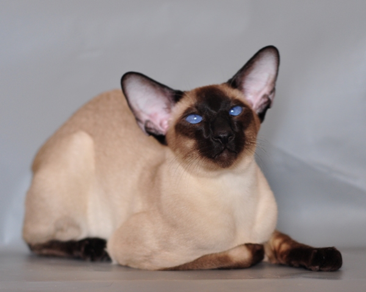
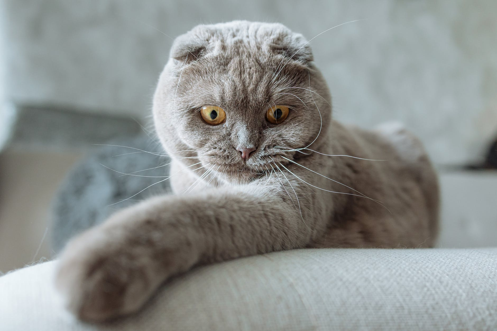
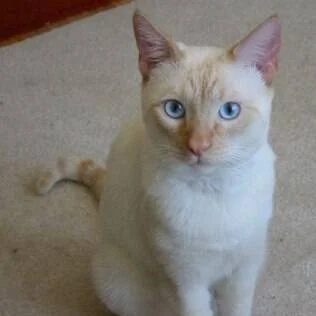
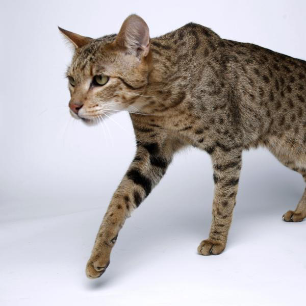
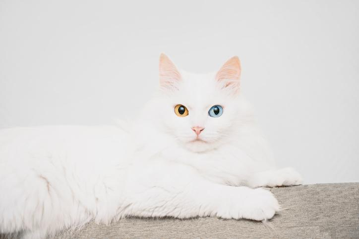

História do LaPerm
País de Origem: EUA
A pelagem peculiar dos gatos La Perm é ondulada ou encaracolada. Esta raça vista pela primeira vez em 1986, fruto de uma ninhada encontrada numa quinta em Oregon, nos Estados Unidos. Apenas um gatinho de uma ninhada de seis nasceu careca. No espaço de oito semanas, o pequeno felino começou a criar uma pelagem muito macia, mas com aspeto encaracolado. Nos gatinhos com três/quatro meses de idade a pelagem encaracolada peculiar da raça La Perm já se torna visível. Ao contrário de outras raças de pelagem encaracolada, tais como a Devon Rex ou Cornish Rex, a pelagem do La Perm pode ser curta ou longa. Uma raça incomum fora da América.
Características:
Os LaPerms são gatos gentis, bondosos e que se dão bem com pessoas, mas não são tão carentes de atenção e pegajosos. Eles adoram a companhia de humanos e adaptam-se bem à vida dentro de apartamentos e em casas, desde que tenham bastante brinquedos e entretenimento
História do Siamês
País de Origem: Tailândia (antigo Reino do Sião)
O Siamês é uma das raças felinas mais populares com pedigree no Reino Unido, ultrapassado apenas pelo gato Britânico de Pelo Curto. Provavelmente é um dos gatos mais fácil de identificar. O Siamês é oriundo da Tailândia e existe há centenas de anos. Reza a lenda que os Siameses eram gatos sagrados e guardavam templos budistas. Os Siameses foram introduzidos na Grã-Bretanha na década de 1880. A cor peculiar dos Siameses eram pontas castanhas e pelagem creme, porém, os criadores ocidentais desenvolveram mais cores ao introduzirem outras raças no programa de reprodução destes gatos. O Siamês original é geneticamente propenso ao estrabismo e tem a cauda dobrada, problemas que atualmente são considerados graves.
Características:
Siameses adoram adultos, crianças e conseguem acompanhar bem o ritmo delas, principalmente quando filhotes. Dão-se bem com outros animais também. Eles gostam muito de atenção e por isso estão constantemente a miar e a pedir por afagos. Os olhos da cor azul-safira são muito característicos da raça.
História do Scottish Fold
País de Origem: Escócia
Este nome foi-lhe atribuído devido às suas orelhas dobradas para a frente. O gato Scottish Fold foi observado pela primeira vez como uma mutação natural, na Escócia, na década de 1960. Os juízes de exposições felinas e um grande número de médicos veterinários decidiram que a dobra do pavilhão auricular para a frente representava uma deformação indesejável, dificultando a limpeza das orelhas. As deformações na coluna vertebral, membros posteriores e cauda também se registavam em cruzamentos entre si. Portanto, o Conselho de Governadores do Clube de Felinicultura no Reino Unido suspendeu o registo desta raça. A raça é popular nos EUA e noutros países.
Características:
A principal característica do Scottish Fold com relação à sua inteligência é que ele é um animal extremamente adaptável. Por ser ao mesmo tempo brincalhão e calmo, ele se dará bem em ambientes pequenos ou grandes, apartamentos fechados ou casas com jardim.
História do Colorpoint
País de Origem: Tailândia (antigo Reino do Sião)
O Siamês é uma das raças felinas mais populares com pedigree no Reino Unido, ultrapassado apenas pelo gato Britânico de Pelo Curto. Provavelmente é um dos gatos mais fácil de identificar. O Siamês é oriundo da Tailândia e existe há centenas de anos. Reza a lenda que os Siameses eram gatos sagrados e guardavam templos budistas. Os Siameses foram introduzidos na Grã-Bretanha na década de 1880. A cor peculiar dos Siameses eram pontas castanhas e pelagem creme, porém, os criadores ocidentais desenvolveram mais cores ao introduzirem outras raças no programa de reprodução destes gatos. O Siamês original é geneticamente propenso ao estrabismo e tem a cauda dobrada, problemas que atualmente são considerados graves.
Características:
Siameses adoram adultos, crianças e conseguem acompanhar bem o ritmo delas, principalmente quando filhotes. Dão-se bem com outros animais também. Eles gostam muito de atenção e por isso estão constantemente a miar e a pedir por afagos. Os olhos da cor azul-safira são muito característicos da raça.
História do Ashera
País de Origem: EUA
A origem do gato ahsera se deu nos Estados Unidos no ano de 2007, mais especificamente dentro de um laboratório. A ideia era realizar o cruzamento de duas raças, sendo elas o Serval Africano e o Gato Leopardo, a partir dessa combinação, os geneticistas tinham como objetivo desenvolver uma raça hibrida. Um gato com aspecto selvagem, porém domesticável para se ter em casa. Daí então nasceu o gato ashera, esse trabalho foi desenvolvido por Simon Brody junto a sua equipe de geneticistas. O nome ashera se refere a uma deusa da antiguidade.
Características:
O gato Ashera tem umas medidas superiores às de um gato convencional, pode chegar a alcançar um metro e meio de altura e entre 12 a 15 quilos de peso, trata-se de um gato realmente grande. O seu físico é forte e robusto, bonito na sua aparência e movimentos. Se desejamos adotar um gato Ashera devemos ter claro o tamanho adulto que vai chegar a alcançar. Para nos orientarmos é idêntico ao de um cachorro de tamanho médio ou grande. Os olhos costuma ser de cor verde o mel.
História do Angorá
País de Origem: Turquia
A raça surgiu na região de Ancara, na Turquia. Ancara, antigamente chamada de Angora, é conhecida como lar de vários tipos de animais de pelagem comprida, sedosa e delicada, como cabras e coelhos, cujo pelo era usado para fazer roupa. Nos dias de hoje, os gatos Angorá Turcos continuam a vaguear pelas aldeias e regiões interiores da Turquia, praticamente inalterados ao longo dos séculos. O Angorá Turco teve quase extinto, sendo reconhecido como uma raça oficial na Europa por volta do século XVII. Historicamente, na Europa chamou-se de Angorá a todos os gatos de pelo comprido e branco até bem dentro do século XIX.
Características:
O gato Angorá, em geral, é muito inteligente e conquista seu tutor com muita doçura e tranquilidade. Os felinos dessa raça têm muita energia e disposição para brincar, por isso adoram crianças. Ademais, eles são extremamente adaptáveis ao ambiente em que estão inseridos.